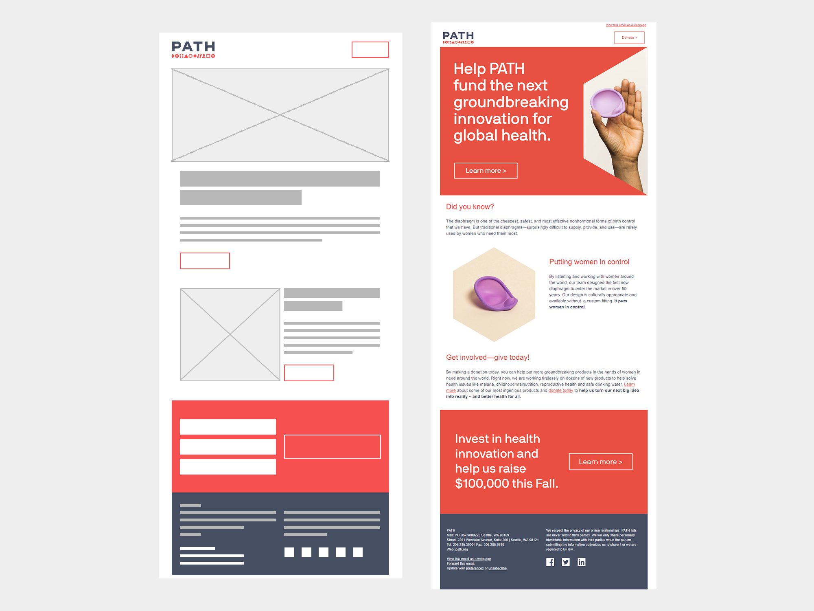
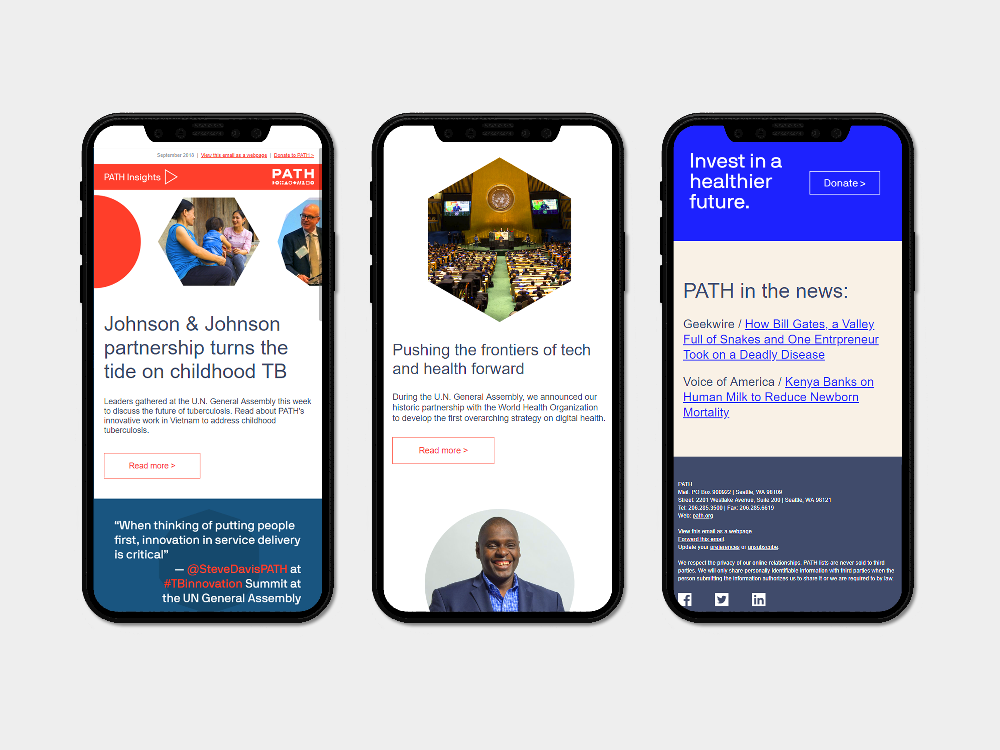

I created a fast, easy, user-friendly responsive email system for PATH. It's easy to update, easy to use, and mostly importantly, tested to ensure that each email is performing the best that it can.
When PATH rebranded, there was an opportunity to revamp the way the entire library of email templates and also email strategy. PATH's old email templates were suited to longform letter content, did not use buttons at all, and no time was dedicated to A/B testing what did and did not work with regards to email strategy.
I investigated using Campaign Monitor's template builder, but limitations like the uneditable footer made it a bad choice for wide use in external campaigns. I chose instead to use the Cerberus system as a starting point for creating hybrid responsive/fluid email templates. The great thing about using Cerberus as a starting point is it's heavily commented; some members of the design team were more comfortable editing HTML/CSS directly than others, and I wanted to make sure we were using a system that anyone could pick up and edit if necessary.
I built out a lightweight header & footer. I tested a donate button vs. a text link following the "view as a webpage" link; the button performed better and was put into mass production.
I wanted to make the system as flexible as possible, so that one-off email templates wouldn't be necessary for event invites or fundraising campaigns. I created a modular system that mimicked the redesigned path.org website, with donate/CTA blocks both image-based and in live text. During the research phase I worked closely with an email marketing manager to create a list of needs and begin creating modules to meet each one.
The new library is more modern, flexible, contains room for more images, and includes CTA buttons. It is easy to learn, consistent, and continually being A/B tested to make sure we're creating emails that are functional and user friendly.
